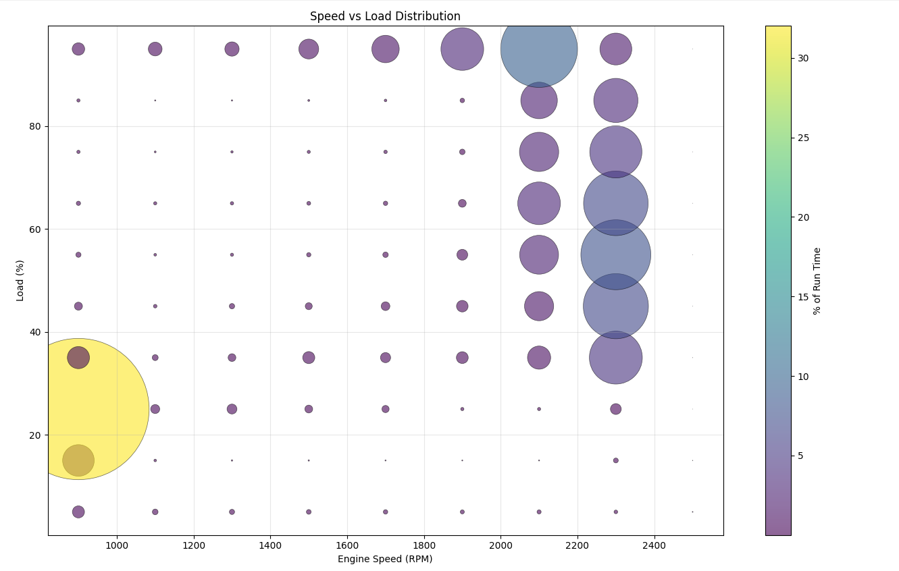

The Speed/Load Distribution chart visualizes how much time the engine has spent operating at various combinations of engine speed (RPM) and load percentage.
This scatter plot displays engine operating time distributed across a grid of speed and load combinations:
The chart helps identify the engine's typical operating patterns and reveals whether the engine is being used efficiently or is frequently operating in suboptimal conditions.
Operating a diesel engine at low load for extended periods can cause several problems:
| Issue | Description |
|---|---|
| Wet Stacking | Unburned fuel and soot accumulate in the exhaust system when combustion temperatures are too low to fully burn the fuel charge. |
| Carbon Buildup | Incomplete combustion leads to carbon deposits on injector tips, valves, and piston rings, reducing engine efficiency and performance. |
| Cylinder Glazing | Low combustion pressure prevents piston rings from seating properly, causing the cylinder walls to become polished (glazed) and reducing oil control. |
| Oil Dilution | Unburned fuel can wash past the piston rings and contaminate the crankcase oil, reducing lubrication effectiveness. |
| Increased Emissions | DPF and aftertreatment systems may not reach proper operating temperatures, leading to incomplete regeneration cycles and increased emissions. |
When reviewing the Speed/Load Distribution chart, look for:
For a complete picture of engine utilization, compare the Speed/Load Distribution with the header information:
Idle Hours ÷ Engine Hours × 100